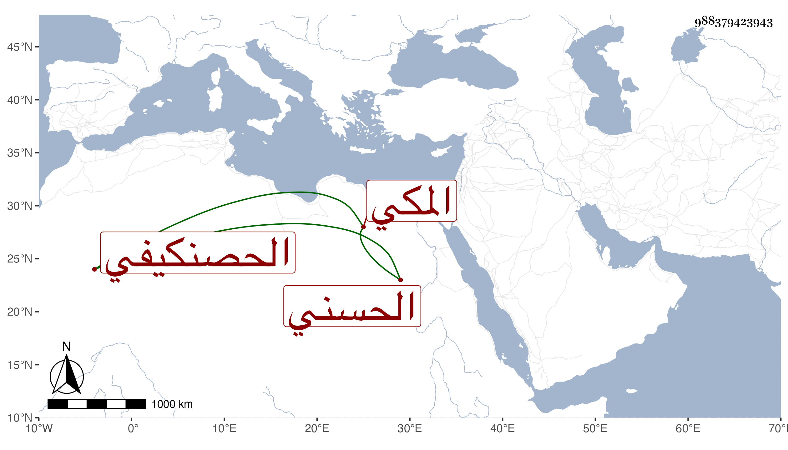

0902Sakhawi.DawLamic.ITO20230111-ara1.EIS1600.988379423943
Biography ID: 988379423943
86
محمد بن أبي عبد الله محمد بن يوسف بن حسين الجمال الحسني الحصنكيفي الأصل المكي ابن أخي أحمد الماضي هو وجده حسين والآتي أبوهما يوسف . ولد كما كان يقول في سنة اثنتين وثلاثين وثمانمائة ونوزع فيه وأنه بعد ذلك وباشر التأذين بالمسجد الحرام ومشيخة القراء به وبالمحافل سيما عند القبور ثم رغب عن وظيفة الأذان واستمر على المشيخة حتى مات في ربيع الثاني سنة ثلاث وتسعين .
